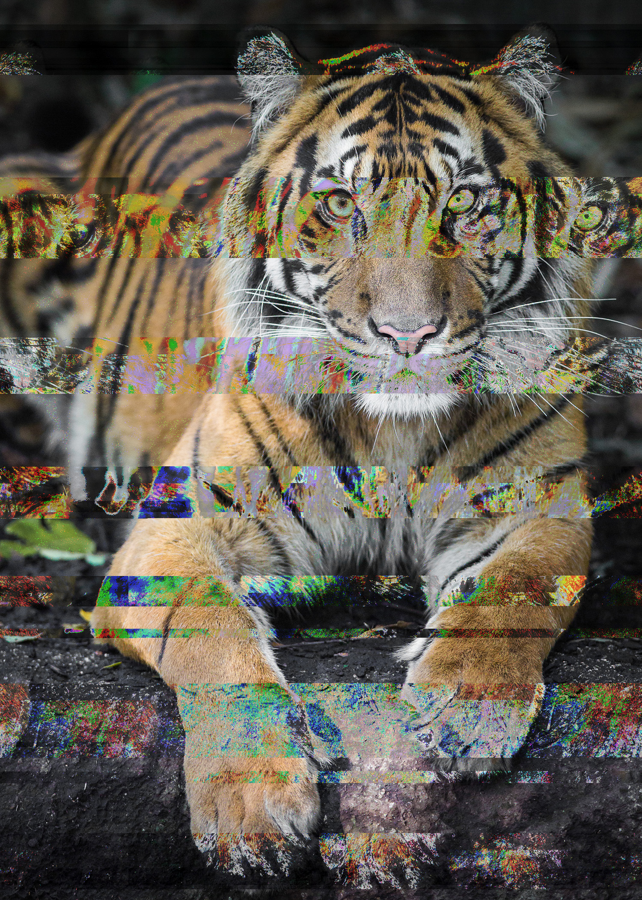
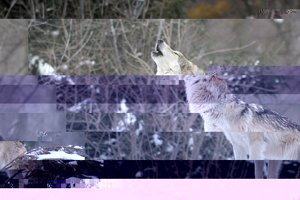

I've always wanted to learn how photos can be glitched, because they look amazing. They have their own personality in the photo that changes from the manipulating the code.
Glitching can be hard for me, due to the different places of the photo's code that can be difficult to understand on whether specific affects can be placed.
However, it is very fun to glitch and I enjoy on result of it, even though there are times when it won't come out the way I want it to, that's the point of it. To change the image to be not its original.
I love wild animals, so I chose this Sumerian Tiger image with the use of audacity to glitch the image a bit. I used the echo filter effect many times on audacity and eventually the glitch image came out like this, which I absolutely love, because it shows an interesting amount of balanced colors.
I chose the wolf because it is my favorite spiritual animal of all time, it represents who I am. I used the edit text glitch process for this image, I took bits of texts that I copied and pasted them to areas a bit further away so that it glitches a little bit at a time and still stays a bit similar to the original image.
